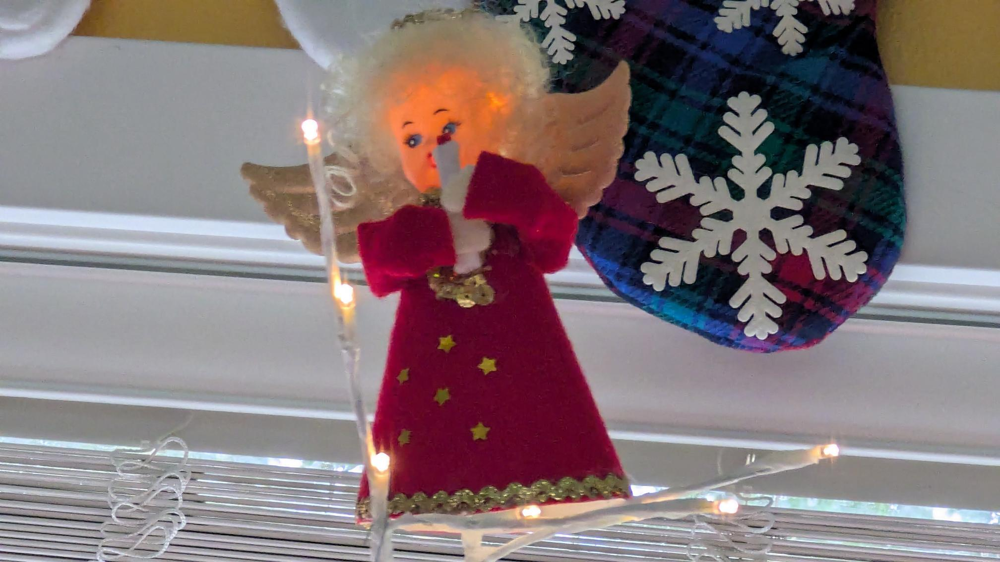

Ope...A Life
1
#pnw
What is a Bomb Cyclone? AKA bombogenesis. AKA Explosive Cyclogenesis Kinda fizzled out for Oregon Coast.
The central Oregon coast was mostly spared the so-called “bomb cyclone” that damaged northern California and the Seattle area this week, but that doesn’t mean the late fall storms are over.
The National Weather Service has issued a high wind watch for the central coast for most of Friday, forecasting that south winds could reach up to 60 mph.
#pnw
A High Wind Warning for the coastal headlands and beaches means a hazardous high wind event is expected or occurring in those areas along the immediate coast. Many of the headland areas and beaches are vulnerable to very strong wind gusts that may pose a safety hazard for individuals or high profile vehicles. The strong winds may also cause property damage. Sustained wind speeds of at least 40 mph or gusts of 58 mph or more are expected in those areas. Coastal headlands are characterized by high, rocky shores and steep sea cliffs. Winds this strong can make driving difficult, especially for high profile vehicles. Use extra caution.
#pnw
* WHAT...Large waves and hazardous surf conditions. Breakers up to 25 to 30 feet.
* IMPACTS...Destructive waves may wash over beaches, jetties, and other structures unexpectedly. People can be swept off rocks and jetties and drown while observing high surf. Minor beach erosion may damage coastal properties and buildings. Higher than normal water run-up is expected on beaches and low-lying shoreline. Enhanced possibility for sneaker waves.
#di.nota
NHL players are totes adorbs. They group hug for celebrations, chew their mouth guards like pacifiers, and every once in a while they throw a big tantrum and get put in a timeout. Oh, and every time an announcer states that the players need a change, I giggle.
#pnw #backyard #ope
Rudolph chilling, listening to More Bounce to the Ounce, in the backyard after a hard night's work (with special guest appearance by plastic pink flamingo #1).
Oregon Coast on Christmas day means rain, a high wind warning, and a high surf advisory.
Watched Season 01 Episode 01 of The Simpsons last night. Titled, "Simpsons Roasting on an Open Fire." I'd forgotten how 80s it felt. Kinda neat. Gonna watch a couple more Simpsons christmas episodes today. Also watched Scrooged. Favorite line from a christmas movie? "Bitch hit me with a toaster." Carol Kane was fabulous. So was David Johansen.
The smell of christmas dinner has filled the house, the comfy chair is supremely comfortable, there's a fire going, and Frowzy Du tops the tree. Seasons greetings.

#ope
...EXTENDED PERIOD OF WET WEATHER WILL LEAD TO RISES ON RIVERS AND AN INCREASED POTENTIAL FOR FLOODING...
caveat lector